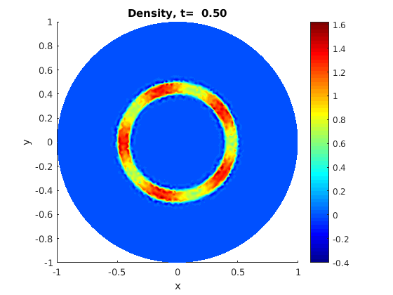
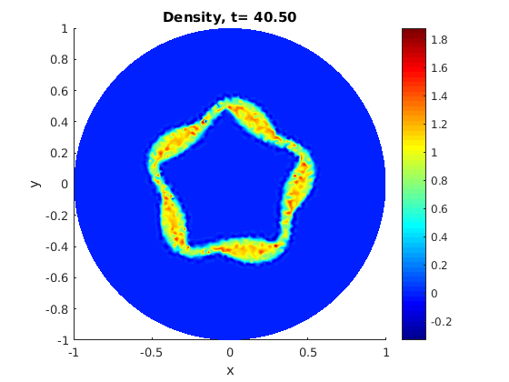

Particle in Cell 2D for the Guiding Center Model
Author: Jakob Ameres jakobameres.com
Contents
Features
This is an example code for the Particle Mesh Coupling using unstructured Finite Elements, with the MATLAB PDE Toolbox. Lagrange Basis functions do not have continous derivatives, making them by far not the optimal choice as basis functions. Yet this should be a simple example to learn and demonstrate the capabilities of an vectorized implementation.
- Particle Mesh Coupling to MATLAB PDE Toolbox
- Arbitrary explicit Runge-Kutta methods
- Linear Lagrange Finite Elements on Triangles
- Recursive Last Neighbor particle in simplex location
- Supports unstructured mesh
- Nonconformal elements, no boundary conditions implemented
Equations
This code solves the Guiding Center Model. The evolution of a density coupled to the Poisson equation
The electric field comes from the Potential by
where the Poisson equation is
The characteristics for every particle are given as
The implemented testcase is the Diocotron Instability, a special case of a Helmholtz instability in a cylindrical domain. This is actually observable in nature, see here. The mathematical groundwork with the Semi-Lagrangian method is given in Paper.
Here we change the maximum radius to in order to use default MATLAB functions.
clear all; close all;
Parameters
Np=1e4; % Number of particles dt=0.5; % Time step tmax=200; % Final time % Plotting frequency, every _plot_freq_ timestep plot_freq=40; %r_max=10; %r_min=0; %boundary_cond='dirichlet'; % Options are neumann or dirichlet
Load Particles
eps=0.3;
rplus=0.5;
rminus=0.4;
mode=5;
f0_polar=@(r,theta,phi)(1-eps*cos(theta*mode)).*(r>=rminus).*(r<=rplus);
g0_polar=@(r,theta,phi)(1-eps*cos(theta*mode)).*...
(r>=rminus).*(r<=rplus)*2.*r/(rplus.^2-rminus.^2)/(2*pi);
Randomized Quasi Monte Carlo with the SOBOL sequence. Scramble.
sobolnum = sobolset(2,'Skip', 0); sobolnum= scramble(sobolnum,'MatousekAffineOwen'); rk=sqrt(sobolnum(1:Np,1)*(rplus^2-rminus^2) + rminus^2); uniformrnd=sobolnum(1:Np,2); thetak=uniformrnd*2*pi; idx=0; while (idx<=20 ) %a bit much thetak=thetak- (thetak - eps*sin(mode*thetak)/mode -2*pi*uniformrnd)./... (1-eps*cos(mode*thetak)); idx=idx+1; end clear uniformrnd; % Set density and sampling likelihood fk=f0_polar(rk,thetak); gk=g0_polar(rk,thetak)./rk; %Transform into cartesian coordinates xk=rk.*cos(thetak); yk=rk.*sin(thetak); clear rk thetak;
Finite Element Poisson solver
Create PDE model for the poisson equation
model = createpde(1); % Define outer boundary as a circle, according to the MATLAB structure. boundary=@circleg; %Define the geometry from a limiting function geometryFromEdges(model,boundary); % Meshing with triangles for linear Lagrange Elements generateMesh(model,'Hmax',0.03,'GeometricOrder','linear');
Assemble poisson matrix and mass matrix
specifyCoefficients(model,'m',0,'d',0,'c',1,'a',1,'f',1); % Dirichlet null Boundary Condition applyBoundaryCondition(model,'edge',1:model.Geometry.NumEdges,'u',0); applyBoundaryCondition(model,'edge',1:model.Geometry.NumEdges,'g',0,'q',0); FEM = assembleFEMatrices(model); % Incorporate dirichlet boundary conditions in laplace operator K=FEM.K+FEM.Q + (FEM.H'*FEM.H); %Poisson Matrix M=FEM.A; % Mass matrix for reconstruction, L^2 Projection
Particle Mesh coupling
Particles in the domain
figure('Name','Domain with Particles','Numbertitle','off'); pdegplot(boundary, 'edgeLabels', 'on'); hold on; plot(xk,yk,'.'); grid on;axis equal; hold off; title('Particles t=0'); xlabel('x');ylabel('y'); % Create Triangulation structure from the mesh TR = triangulation(model.Mesh.Elements', ... model.Mesh.Nodes(1,:)', ... model.Mesh.Nodes(2,:)'); % Set up gradient for every basis function on every triangle. % The gradient is constant, therefore this saves computational power grad_phi=[TR.Points(TR.ConnectivityList(:,2),2)- TR.Points(TR.ConnectivityList(:,3),2),... TR.Points(TR.ConnectivityList(:,3),2)- TR.Points(TR.ConnectivityList(:,1),2),... TR.Points(TR.ConnectivityList(:,1),2)- TR.Points(TR.ConnectivityList(:,2),2),... TR.Points(TR.ConnectivityList(:,3),1)- TR.Points(TR.ConnectivityList(:,2),1),... TR.Points(TR.ConnectivityList(:,1),1)- TR.Points(TR.ConnectivityList(:,3),1),... TR.Points(TR.ConnectivityList(:,2),1)- TR.Points(TR.ConnectivityList(:,1),1)]; %Normalize with area of triangle grad_phi=bsxfun(@times,grad_phi,1./(... TR.Points(TR.ConnectivityList(:,2),1).*TR.Points(TR.ConnectivityList(:,3),2) +... TR.Points(TR.ConnectivityList(:,1),1).*TR.Points(TR.ConnectivityList(:,2),2) +... TR.Points(TR.ConnectivityList(:,3),1).*TR.Points(TR.ConnectivityList(:,1),2) -... TR.Points(TR.ConnectivityList(:,2),1).*TR.Points(TR.ConnectivityList(:,1),2)-... TR.Points(TR.ConnectivityList(:,3),1).*TR.Points(TR.ConnectivityList(:,2),2)-... TR.Points(TR.ConnectivityList(:,1),1).*TR.Points(TR.ConnectivityList(:,3),2)));
Runge Kutta
Define the Butcher tableau Second order
rk.A=[0, 0; 1, 0]; rk.c=[0;1]; rk.b=[0.5, 0.5]; % Fourth order rk.A=[0,0,0,0; 0.5,0,0,0; 0,0.5,0,0;0,0,1,0]; rk.c=[0; 0.5; 0.5;1]; rk.b=[1/6, 1/3, 1/3, 1/6]; % Create figures for live diagnostic fig1=figure('Name','Particle-Mesh','Numbertitle','off'); fig2=figure('Name','Density','Numbertitle','off'); fig3=figure('Name','Potential','Numbertitle','off'); % Locate particles at initial time [TI, BC] = pointLocation(TR, [xk,yk]); tstep=1; for t=0:dt:tmax % Loop over Runge Kutta stages for rkdx=1:length(rk.A)
% Allocate stages
rk.kx=zeros(Np,length(rk.b));
rk.ky=zeros(Np,length(rk.b));
Particle-Mesh Coupling
Locate the particles in the triangulation
%_TI_ is the triangle index %_BC_ contains the barycentric coordinates in the triangle tic; [TI,BC]=locate_particles(TR, ... [xk+rk.kx*dt*rk.A(rkdx,:)',... yk+rk.ky*dt*rk.A(rkdx,:)'],... TI); % Measure particle location time location_time(rkdx,tstep)=toc; % Find the three nodes _node_ for every particle node=TR.ConnectivityList(TI,:); % Accumulate charge onto grid rhs=accumarray(reshape(node.',Np*3,1),... reshape( bsxfun(@times,BC, fk./gk).', Np*3,1),... [size(model.Mesh.Nodes,2) ,1])./Np; % Solve the poisson equation %rho=M\rhs; phi=K\rhs; % Diagnostic if (rkdx==1) energy(tstep)=phi'*rhs; l2norm(tstep)=rhs'*(M\rhs); end %pdeplot(model,'xydata',sol) % Evaluate gradient of the solution Ex=phi(node(:,1)).*grad_phi(TI,1)... +phi(node(:,2)).*grad_phi(TI,2)... +phi(node(:,3)).*grad_phi(TI,3); Ey=phi(node(:,1)).*grad_phi(TI,4)... +phi(node(:,2)).*grad_phi(TI,5)... +phi(node(:,3)).*grad_phi(TI,6); rk.kx(:,rkdx)=-Ey; %+ E_y(x, t+ rk.c*dt) rk.ky(:,rkdx)=Ex;
end % Final stage of Runge Kutta xk=xk + dt*rk.kx*rk.b'; yk=yk + dt*rk.ky*rk.b'; % Diagnostic if ( mod(t/dt,plot_freq)==0)
Particles in the Mesh.
figure(fig1);
pdemesh(model); axis equal tight; hold on;
plot(xk,yk,'.'); hold off
xlabel('x');ylabel('y');
title(sprintf('Particles, t=%6.2f',t+dt));

Density .
figure(fig2);
pdeplot(model,'xydata',M\rhs); axis equal tight;
colormap jet;
xlabel('x');ylabel('y');
title(sprintf('Density, t=%6.2f',t+dt));
  Potential
figure(fig3);
pdeplot(model,'xydata',phi); axis equal tight;
colormap jet;
xlabel('x');ylabel('y');
title(sprintf('Potential, t=%6.2f',t+dt));
drawnow;

end tstep=tstep+1; end
Discussion
Energy.
time=0:dt:tmax; figure('Name','Energy','Numbertitle','off'); plot(time,energy); title('Field Energy'); xlabel('time'); figure('Name','Energy Error','Numbertitle','off'); plot(time,abs(energy-energy(1))./abs(energy(1))); title('Relative Energy Error'); xlabel('time'); figure('Name','L2 Norm','Numbertitle','off'); plot(time,l2norm); title('$L^2$ norm of density','interpreter','latex'); xlabel('time'); figure('Name','Particle Location Time','Numbertitle','off'); for idx=1:size(location_time,1) plot(time, location_time(idx,:),'Displayname',... sprintf('rk stage %d', idx)); hold on; end xlabel('time'); grid on; title('Particle Location time'); legend('-DynamicLegend','Location','NorthEast');